Project
The History of Apple x Foxconn
Purpose
To bring life to historical events with 3D illustrations of key moments.
My role
3D Artist and Animator, solo creator of all characters, environments and animations
Scope
Approximately 5 minutes of animation, in 7 environments, completed in under 3 weeks
Result
These animations were integrated into a 37 minute documentary that got 450k views on Youtube. Link
Process
Storyboards
The client brought me references that had the general style and subject of the shot, and I created 3D environments that fit our story better and then I animated them to the corresponding line of voiceover.
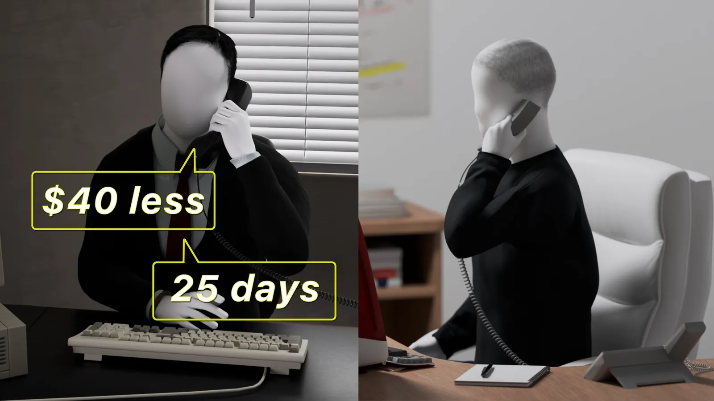
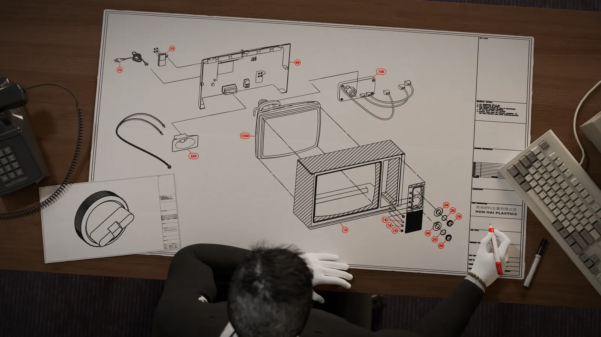
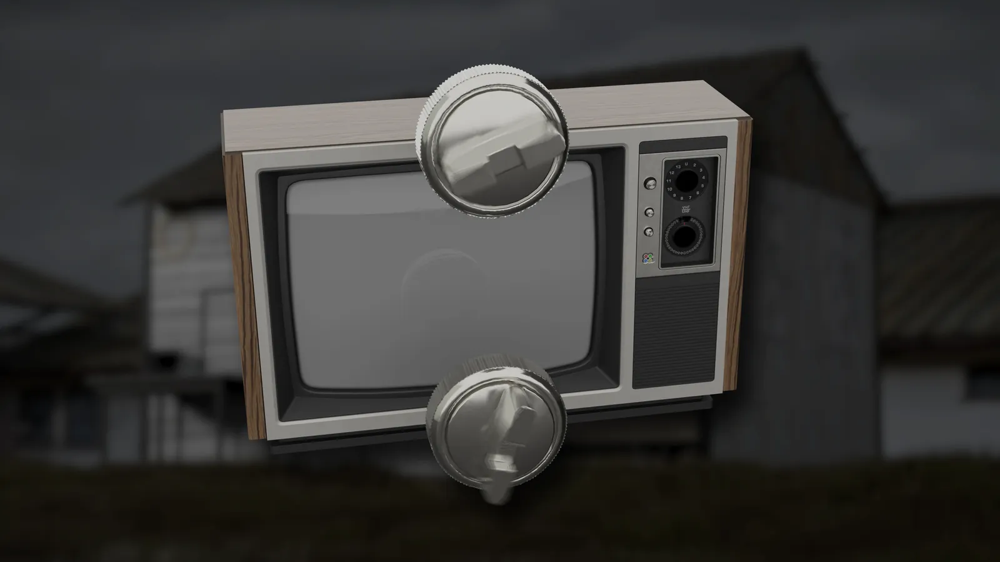
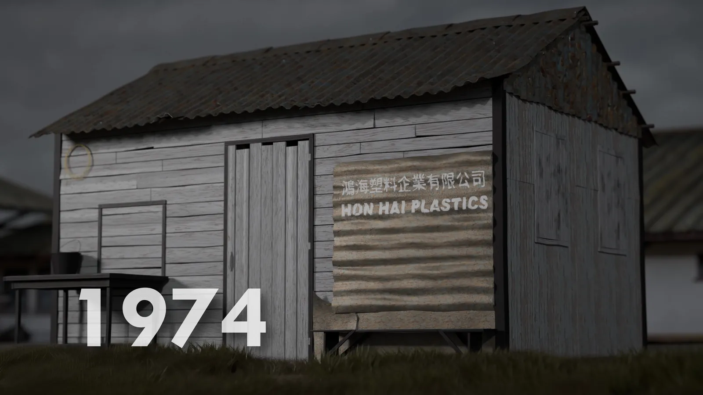
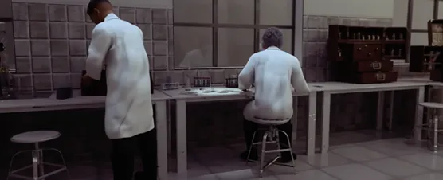
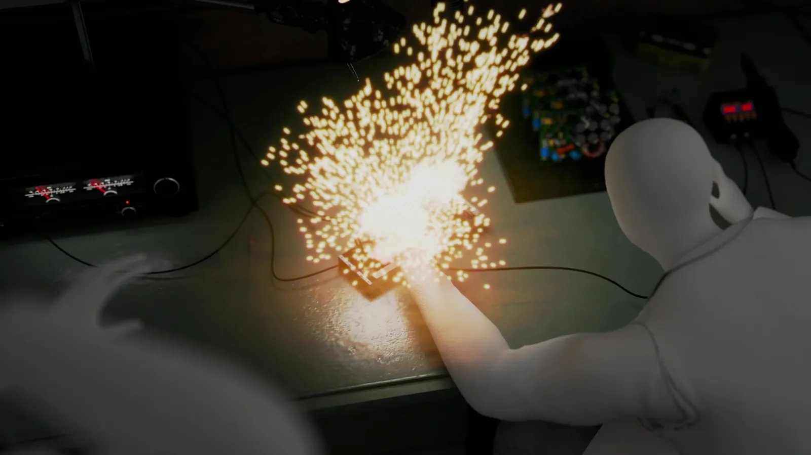
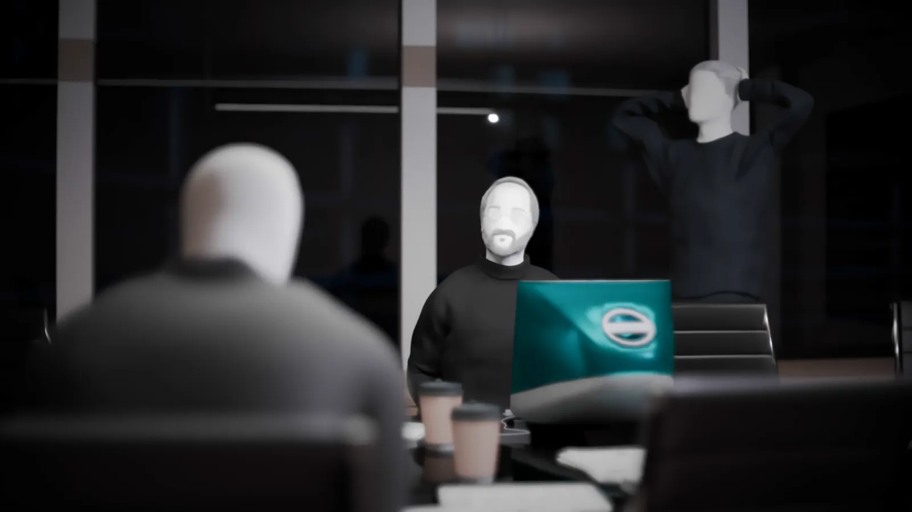
Process
Characters
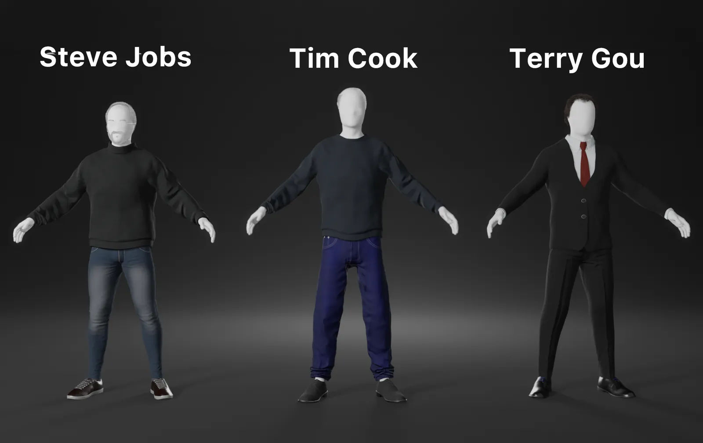
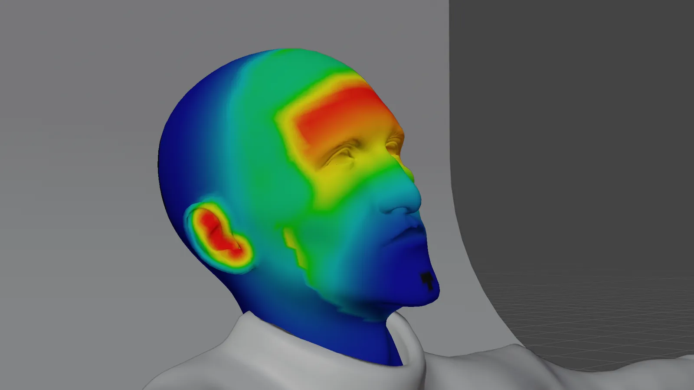
2. Weight Painting
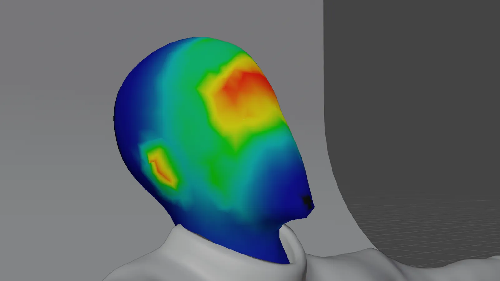
3. Corrective Smooth
4. Materials
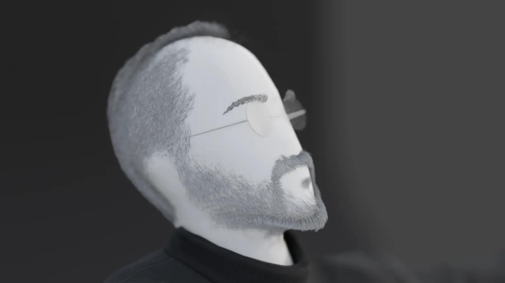
5. Hair and Glasses
The Human Generator base gave me a consistent starting point for building the stylized executive characters.
Process
Animations
A sampling of clips from the final animations created for the documentary.